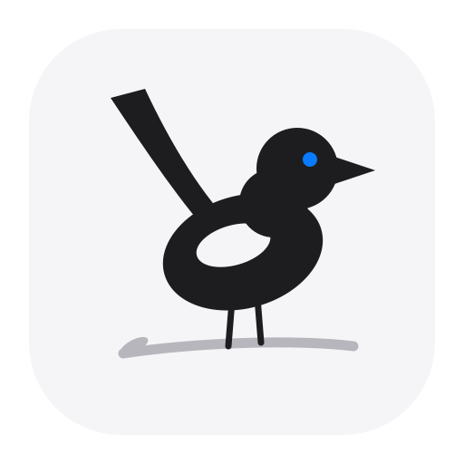

墨鹊栖枝 · 弧线长尾 · 蓝眼点睛 —— 上排浅色 Dock，下排深色 Dock；右到左检验 16px 可读性

观察点：① 长尾弧线的走势是否优雅（鹊形的身份所在）② 16px 时轮廓是否仍然可读 ③ 蓝眼在 32px 以下会缩成一个点——是否有存在的必要 ④ 翼上白斑的大小与位置。 满意后执行 pnpm tauri icon design/app-icon-magpie.svg 生成全套。
pnpm tauri icon design/app-icon-magpie.svg